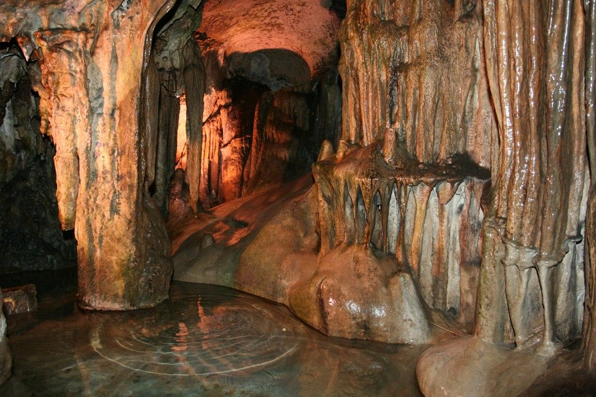
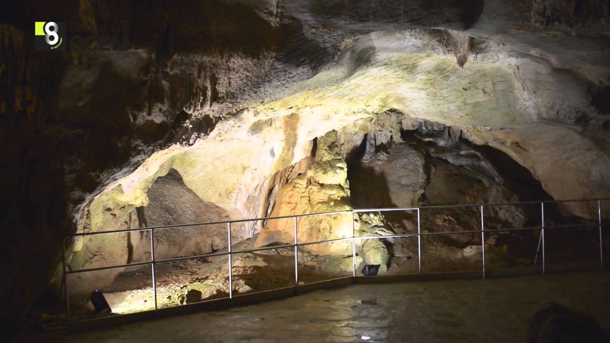

Bulgaria
Пещера "Леденика"

Пещерата "Леденика" е известна със своите чудни синьо-бели водопади и диамантени мечове. Намира се в местността Леденишки валог в Стара планина, на 19км от Враца.Пещерата е разделена на няколко големи зали, в които ще ви посрещнат образите на Свекървения език, Къпещата се девойка, Жената на великана и Къщичката на Баба Яга. Дядо Коледа и целият отбор джудета пък ще ви изпратят с незабарвими впечатлевия от пещерното царство.

Бъдете готови за вълнуващо ледено изживяване в дългата 300м пещера. Входът й ще ви отведе в първата зала - Преддверието, в която всичко искри с диамантен блясък. Вниманието ви ще грабне огромна ледена колона, под която ще видите леден комплект за вино, който е поръсен сякаш с пудра захар.